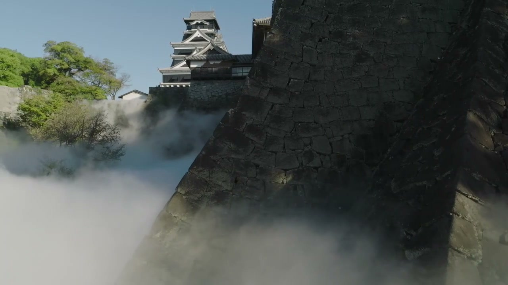
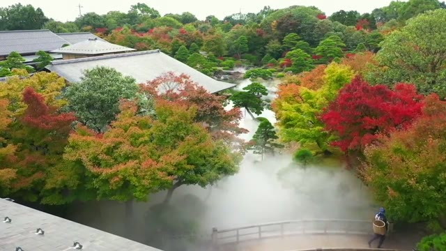
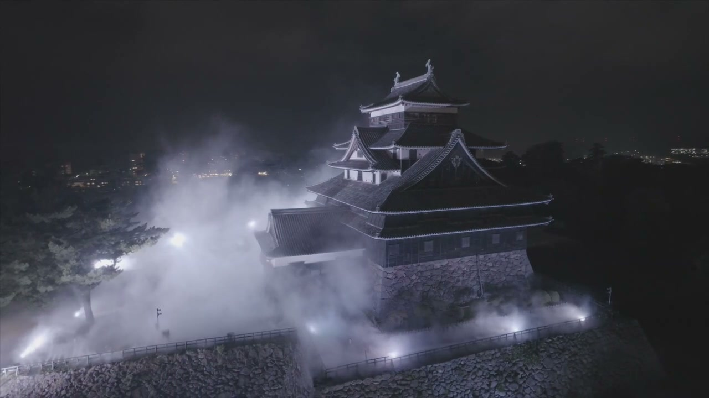
雲海演出 UNKAI EFFECT
庭園が一瞬にして別世界へ ―― 旅の目的地になる「雲海庭園」。
ここでしか味わえない雲海を眺めながらの、特別なお食事・ご滞在を。
陶夢(TOMU Corporation)が、貴施設に幻想的な人工雲海をご提案します。
FEATURES
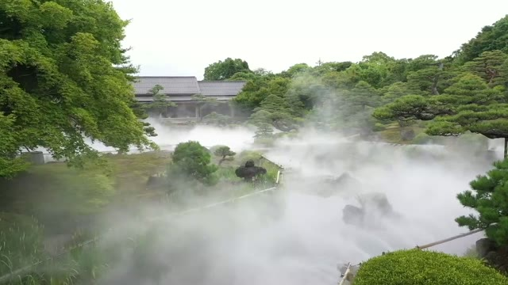
自然の雲海は運や天候次第ですが、人工雲海システムなら毎朝・毎晩、決まった時間に幻想的な雲海を創り出せます。お食事中の演出や朝の散策時間に合わせて、日本庭園ならではの特別な景観をお届けします。
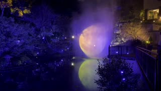
特殊フィルターで浄化した水と2種類のセラミックノズルにより、噴霧量を細かくコントロール。SNSで拡散されやすい「フォトジェニックな空間」は、施設のブランド価値向上にも貢献します。
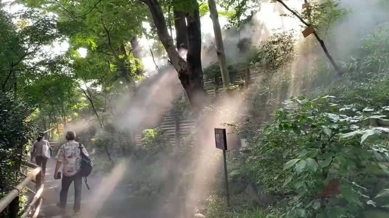
周辺環境により変動しますが、目安として3度前後の涼しさを実感いただけます。数ミクロン単位の超微粒子で噴霧するため、空間を不快に濡らすことなく来場者の熱中症対策・涼感スポットとして機能します。
FOR YOUR FACILITY
朝夕の限定演出として「雲海を眺めながらのラウンジ体験」をパッケージ化。ナイトウエディングやフォトウエディングの新たな見どころとしても、高価格帯プランの理由付けとなります。
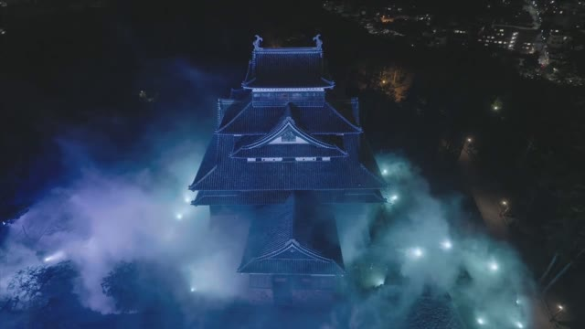
建築物や植栽への影響が少ない設計のため、既存の庭園景観を活かしたまま導入が可能です。ライトアップと組み合わせた夜間演出や、イベント時の入場料収入アップにもつながります。
GALLERY
実際の演出シーンより。庭園の緑と紅葉、そして夜の光がつくる幻想的な景観です。
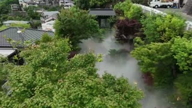
年間365日、任意の時間に雲海を創出
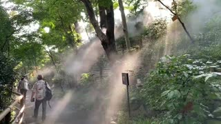
気化熱による暑熱環境の改善
宿泊・滞在体験の高付加価値化
SNS映え、観光コンテンツ化
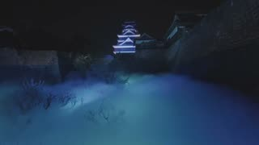
夜間照明との組み合わせ
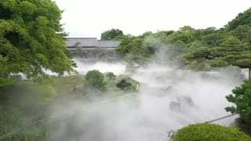
日本庭園・露天風呂・展望施設との融合